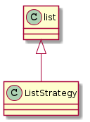
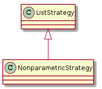
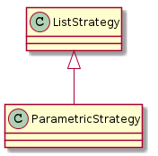

A Nonparametric strategy runs commands that don’t require parameters.

| ListStrategy | A List Strategy extends the list to use for executing commands. | ||
| ListStrategy.remove(command) | This doesn’t raise an error so it can be called at any time | ||
| ListStrategy.purge(command) |
|
||
| ListStrategy.reset() |
|

| NonparametricStrategy | A nonparametric Strategy is a container and runner of commands | ||
| NonparametricStrategy.__call__() |
|

| ParametricStrategy | A parametric strategy is a container and runner of commands. | ||
| ParametricStrategy.__call__(parameters) |
|